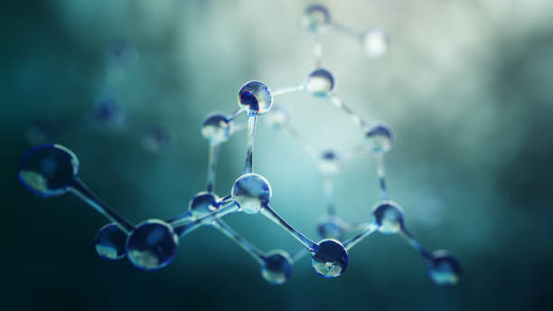

Material Characterisation
At Caleb Analytical Solutions, material characterisation is at the heart of our service offering. We provide comprehensive analysis of the physical, mechanical, and chemical properties of a broad spectrum of materials to support research, product development, and quality assurance.
Our capabilities include hardness testing, thermal analysis, spectroscopy, microscopy, chromatography, composition analysis and crystallography, among others. Utilizing state-of-the-art instrumentation and rigorous methodologies, we help clients gain deep insights into material behaviour under different conditions, thereby enabling innovation and performance optimisation.
Whether you are developing new alloys, assessing product durability, or conducting failure investigations, our detailed characterisation data guides decision-making and enhances product reliability. Our reports are thorough, clear, and tailored to client requirements.
Partner with Caleb Analytical Solutions for reliable, high-quality material characterisation services that empower your business and research ambitions.